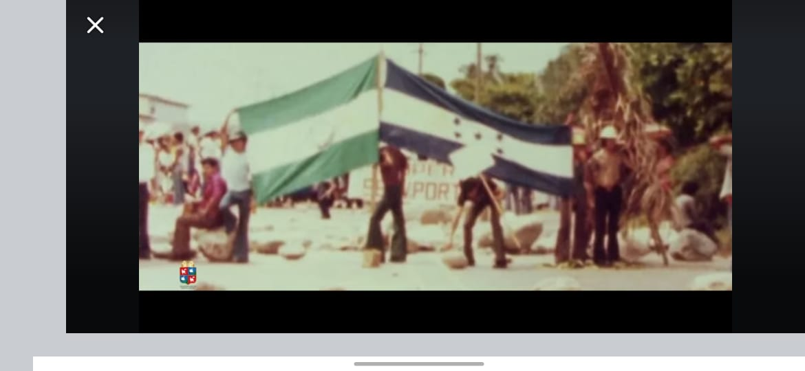

Carrera Técnica en Informática
 La carrera de Informática ofrece una formación completa en desarrollo de software, administración de sistemas y tecnologías de la información. Los estudiantes aprenden a programar en Python, JavaScript y C++, aplicando lógica computacional y metodologías ágiles para la resolución de problemas reales.
Además de la programación, se estudian redes de computadoras, ciberseguridad, mantenimiento de equipos y administración de sistemas operativos. Los alumnos trabajan en laboratorios modernos, participando en proyectos colaborativos que simulan entornos empresariales reales.
 El enfoque práctico permite desarrollar sitios web, bases de datos y sistemas de gestión. Se fomenta el pensamiento lógico, la ética profesional, la innovación y la capacidad de adaptación a nuevas tecnologías emergentes.
El enfoque práctico permite desarrollar sitios web, bases de datos y sistemas de gestión. Se fomenta el pensamiento lógico, la ética profesional, la innovación y la capacidad de adaptación a nuevas tecnologías emergentes.
Los estudiantes participan en ferias tecnológicas, hackathons, competencias de programación y certificaciones internacionales, fortaleciendo su perfil profesional y abriendo puertas a oportunidades nacionales e internacionales.
Salidas Profesionales
Crea aplicaciones, sistemas y soluciones tecnológicas innovadoras.
Brinda asistencia técnica en hardware, software y redes.
Gestiona infraestructura de redes y sistemas para empresas.
Interpreta información para la toma de decisiones estratégicas.
Desarrolla proyectos propios en software, aplicaciones o servicios digitales.